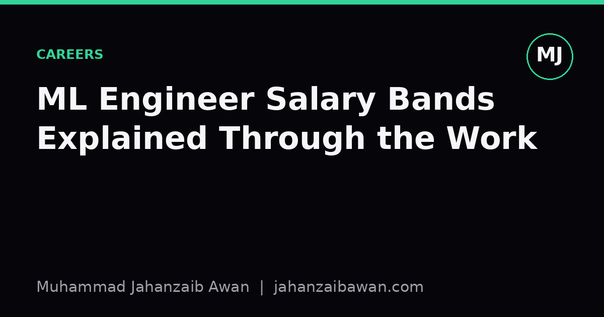

ML Engineer Salary Bands Explained Through the Work
Titles like junior, mid, and senior tell you almost nothing on their own. The work you actually do, and how much judgement it requires, tells you everything.

Why the title is the wrong lens
Ask ten people what a senior machine learning engineer does and you will get ten different answers. One company's senior is another company's mid-level hire with a flattering title bolted on to justify a tight budget. I have seen job adverts for senior roles that amount to running pre-built pipelines on a schedule, and mid-level adverts that expect someone to design evaluation methodology from scratch for a problem nobody in the company has solved before. The title is a label applied by an organisation's internal politics and hiring budget, not a neutral measure of skill or responsibility.
What actually drives a salary band is the nature of the decisions you are trusted to make unsupervised. That sounds abstract, so let me make it concrete. A junior engineer is typically handed a well-defined task: fine-tune this model on this dataset, hit this metric, report back. The ambiguity has already been removed by someone more senior. A mid-level engineer is often handed a problem rather than a task: improve retention prediction for this product, figure out what data and approach makes sense. A senior engineer is frequently handed a goal with no clear problem attached yet: reduce churn, and it is on them to decide whether machine learning is even the right tool before writing a line of code.
This matters because if you are negotiating a salary, or deciding whether to accept a role, matching your actual day-to-day against this ladder of judgement tells you far more than comparing titles across companies. A 'senior' role that hands you fully specified tickets is, functionally, a mid-level role wearing a costume.
A worked example: three engineers, one problem
Imagine a company wants to predict which customers will cancel a subscription next month. Three engineers at different bands might all touch this project, and the difference in their contribution is instructive.
- The junior engineer is given a cleaned dataset, a target column, and a brief: try gradient boosting and a couple of baselines, report AUC on a held-out set. They do this competently, perhaps noticing that the validation split was done randomly rather than by time, and flagging it to someone more senior rather than fixing it themselves. That flag is valuable, but the fix and its justification are not theirs to own yet.
- The mid-level engineer is the one who built that dataset in the first place. They decided which features were safe to use without leaking future information, chose a time-based split because customers who cancel in January look different from customers who cancel in July, and picked a baseline, perhaps a simple recency and frequency heuristic, strong enough that the final model has to actually beat something rather than beat nothing. They also decide what 'good enough' means in terms of precision at a given recall, because the business will act on the top-scored customers with a retention offer, and false positives cost real discount budget.
- The senior engineer is the one who was in the room when the question was first asked and pushed back on it. They might point out that churn prediction alone does not reduce churn, that someone needs to design an intervention and measure its effect with a proper holdout group, and that without that experiment the whole modelling exercise produces a number nobody can act on responsibly. They are also the one who decides the retrain cadence, who notices that the mid-level engineer's time-based split still leaks because some customers appear in both the training and test windows under different account IDs, and who owns the uncomfortable conversation about whether the model is worth the maintenance cost at all.
Three people, one churn model, three completely different sets of decisions. The salary gap between them is not really about who writes better code. It is about who can be trusted to spot the leak nobody else saw, and who can be trusted to say no to a project that will not work.
Why this ladder of judgement maps to pay
Companies pay for risk reduction, not for lines of code. A junior engineer's mistakes are usually contained: a weak model, a missed deadline, a metric that needs recalculating. These are annoying but recoverable. A senior engineer's mistakes are expensive precisely because they operate with less oversight: a poorly chosen evaluation protocol can convince an entire organisation that a product feature works when it does not, and that mistake might not surface for months, after budget and trust have already been spent on it.
This is also why experience alone is a poor predictor of band. I have met engineers with several years of tenure who have only ever executed well-specified tasks, because their organisation never required more of them, and their actual judgement on ambiguous problems is closer to junior than their job history suggests. I have also met engineers early in their careers who, through curiosity or necessity, had to design their own evaluation from the ground up and defend it under scrutiny, and their judgement is genuinely further along than their years would imply. Pay should track the second thing, even though titles and years on a CV usually only capture the first.
There is a practical test you can apply to yourself or to a role you are considering: when something goes wrong with the data, the metric, or the framing of the problem, whose job is it to notice and whose job is it to decide what to do about it. If the answer is consistently 'someone else' for the noticing, you are likely in a junior band regardless of title. If the answer is consistently 'me' for both the noticing and the deciding, and the consequences of a wrong decision would genuinely hurt the business, you are doing senior-level work, and the pay conversation should reflect that rather than deferring to whatever label happens to be printed on the contract.
A practical takeaway
When you next look at a salary band, whether your own or one advertised for a role, ignore the title entirely for a moment and ask three questions instead. Who decides whether the problem should be solved with machine learning at all. Who decides what a trustworthy evaluation looks like for this specific problem, including the uncomfortable parts like leakage and realistic baselines. And who is accountable when the model's real-world performance diverges from its offline metrics. The honest answers to those three questions, not the words on the job title, are what the market is actually paying for.